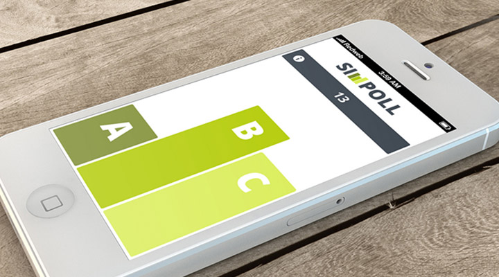
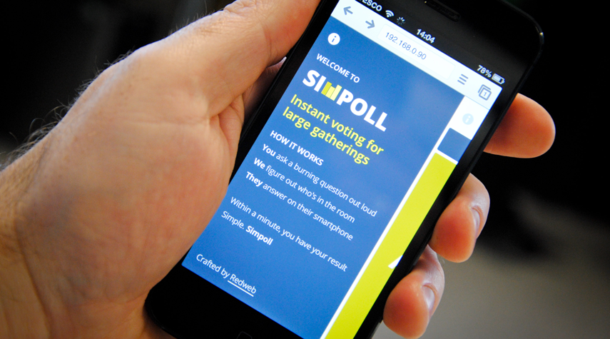

During my time at Redweb a group of us set out to solve the problem of asking questions at conferences or large meetings and getting meaningful responses. While people raising their hands to show their agreement in something is the default way of handling the situation, it is by no means the most ideal. It is transient, it happens for a second and the ‘data’ is then lost. It is also inaccurate, and it can be impossible if the lighting conditions of the venue are not set up for such a circumstance.
Simpoll allows users to simply go to the web page on their mobile devices and select from three choices that will have been contextualised by the person eliciting the response. After 60 seconds the results will be displayed for all to see, and anyone can take a screenshot for archival purposes. No sign up is required by the listener, and no preparation is required by the speaker.
The application was designed to be as simple as possible for all users, and the ease of use of the app is a testament to this idea. The votes are collated via geolocation, which forgoes the the need for custom urls or user sign-up. Choosing to make the app a web app rather than a native app goes hand in hand with the ‘in the moment’ style of the app's intended use, and thus includes everyone by ensuring that all devices already have the software to overcome the barrier to entry: a browser.